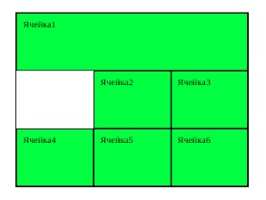

Свойство для элементов CSS Grid
Grid-column-start, grid-column-end, grid-column
Grid-column-start – определяет с какого столбца будет начинаться элемент Grid-column-end – определяет на каком столбце завершиться элемент Стоит заметить что элементы считают до какого столбца они будут идти по граням.
Схематическое отображение совместной работы свойств grid-column-start и grid-column-end

Свойство grid-column позволяет объединить два свойства grid-column-start и grid-column-end
Синтаксис:
grid-column: grid-column-start / grid-column-end – сначала пишется с какой грани ячейка будет начинаться и через слеш пишется где ячейка закончиться.
Значения которые принимают данные свойства:
- auto - Ключевое слово, указывающее, что свойство не влияет на размещение элемента в макете сетки (автоматическое размещение, автоматический диапазон или диапазон по умолчанию равный 1). Является значением по умолчанию.
- Line - Целое число, которое соответствует начальной грани элемента в макете сетки (отсчет граней ведется слева направо от левого края элемента, схематичное отображение вверху страницы). Если задано отрицательное целое число, то отсчет ведется в обратном порядке, начиная с конечного края явной сетки макета. Значение 0 недопустимо.
- Span line - Ключевое слово span с целым числом, которое определяет какое количество столбцов сетки элемент будет охватывать. Если целое число опущено, то по умолчанию используется значение 1. Отрицательные значения или значение 0 недопустимы.
<div id="grid">
<div class="item">Ячейка1</div>
<div class="item">Ячейка2</div>
<div class="item">Ячейка3</div>
<div class="item">Ячейка4</div>
<div class="item">Ячейка5</div>
<div class="item">Ячейка6</div>
</div>
- #grid{
- max-width:400px;
- height:300px;
- display:grid;
- border:1px solid black;
- width:100%;
- grid-template:repeat(2, auto)/repeat(3, auto;
- }
- .item{
- background-color:lime;
- border:1px solid black;
- padding:10px;
- }
- .item1{
- grid-column:1/ span 3;
- }
- .item2{
- grid-column:1/ span 3;
- }
Результат
В данном примере мы сделали так чтобы первая ячейка начиналась с первой грани и занимала ширину как 3 ячейки, 2 ячейка начинается со 2й грани и заканчивается на 3й.
Grid-row-start, grid-row-end, grid-row
Grid-row-start – определяет на какой строке начинается элемент в макете сетки
Grid-row-end – определяется на какой строке будет заканчиваться элемент в макете сетки.
Отсчет также начинается по граням, только если для grid-column отсчет граней идет по горизонтали, то для grid-row отсчет идет по вертикали.
Grid-row – сокращенное свойство которое объединяет в себе свойства grid-row-strt и grid-row-end.
Значения для этих свойств такие же как и для grid-column.
<div id="grid">
<div class="item item1">Ячейка1</div>
<div class="item item2">Ячейка2</div>
<div class="item">Ячейка3</div>
<div class="item">Ячейка4</div>
<div class="item item5">Ячейка5</div>
<div class="item">Ячейка6</div>
</div>
- #grid{
- max-width:400px;
- height:300px;
- display:grid;
- border:1px solid black;
- width:100%;
- grid-template:repeat(2, auto)/repeat(3, auto;
- }
- .item{
- background-color:lime;
- border:1px solid black;
- padding:10px;
- }
- .item1{
- grid-row:1/3;
- }
- .item2{
- grid-row:2/3;
- }
- .item5{
- grid-row:2/4;
- }
Результат

В данном примере первая ячейка начинается с первой грани и заканчивается на 3й, вторая ячейка начинается со второй грани и заканчивается на 3й, как видим вторая ячейка переместилась, 5я чейка начинается со 2й грани и заканчивается на 4й.

Задание 3
Используя grid сверстайте данный макет: Кликни на меня